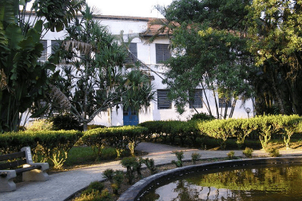

Formação Acadêmica
Base sólida em tecnologia e ciência agrária.
Técnico em Agropecuária
Instituição: ETEC CÔNEGO JOSÉ BENTO
Período: 2020 - 2021
Título: Ensino Técnico Aliado ao Ensino Médio em Agropecuária

Graduação em Desenvolvimento de Software Multiplataforma
Instituição: Fatec Professor Francisco de Moura — Jacareí
Período: 2023 – 2026 | Semestre atual: 6º (2026/1)
Destaque: Bolsista CNPq · Certificação Google Cloud